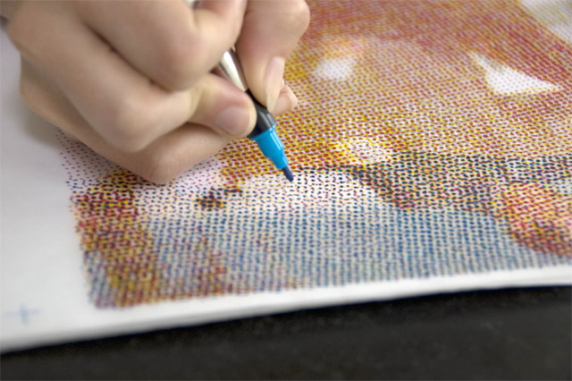

Several different kinds of screens were proposed during the following decades. One of the well known attempts was by Stephen H. Horgan while working for the New York Daily Graphic. The first printed photograph was an image of Steinway Hall in Manhattan published on December 2, 1873.[4] The Graphic then published "the first reproduction of a photograph with a full tonal range in a newspaper" on March 4, 1880 (entitled "A Scene in Shantytown") with a crude halftone screen. The process that is took for me to do the halftone project: 1st I got the image that I wanted to use, 2nd I imported it into photoshop, I pixelized the image, I made sure everything was in CMYK format, I used a separation format to print each cyan, magenta, yellow and black separately, I then got markers that resemble the CMYK, then I copied the layouts I printed out with its own color on separate piece of paper.
https://www.youtube.com/watch?v=1oKQGF2n_t0 *http://vectips.com/tutorials/creating-halftone-effects/
halftone screen angles are the angles the CMYK is printed. They all have different patterns, but they are all printed on a different angle.
https://www.youtube.com/watch?v=CtnyDYLbhVE
http://www.visual-arts-cork.com/history-of-art/pointillism.htm
When a project is to be printed commercially, you must know which colors of ink will be used. This job has a photo so it must be printed with the CMYK process colors. Other jobs may only need one or more specially mixed "spot" colors, usually described with a Pantone number.
*Since each color is printed its own run through the press, it must have its own color separation printed onto a negative or a printing plate.The halftone effect on photoshop makes the image look pixalated, each color layer had its own pattern and angle.
In photoshop, on the right where you control the layers, there is a tab where you can view all channels separately. You can save your project as a photoshop document. Printing all channels, you can just press print and on the printing settings you just adjust you want to print the cmyk seperations and you can also have a description on each page with its color name etc.
http://www.adobe.com/devnet/edge-reflow/articles/edge-reflow-getting-started.html
http://www.adobe.com/inspire/2013/04/responsive-web-designs-edge-reflow.html
https://www.youtube.com/watch?v=-DTZRZ-TO6c
You can actually publish your website and have it hosted by EWU. You can easily go on their website and host it on there which is linked to your student account.
Images often account for most of the downloaded bytes on a web page and also often occupy a significant amount of visual space. As a result, optimizing images can often yield some of the largest byte savings and performance improvements for your website: the fewer bytes the browser has to download, the less competition there is for the client's bandwidth and the faster the browser can download and render useful content on the screen.